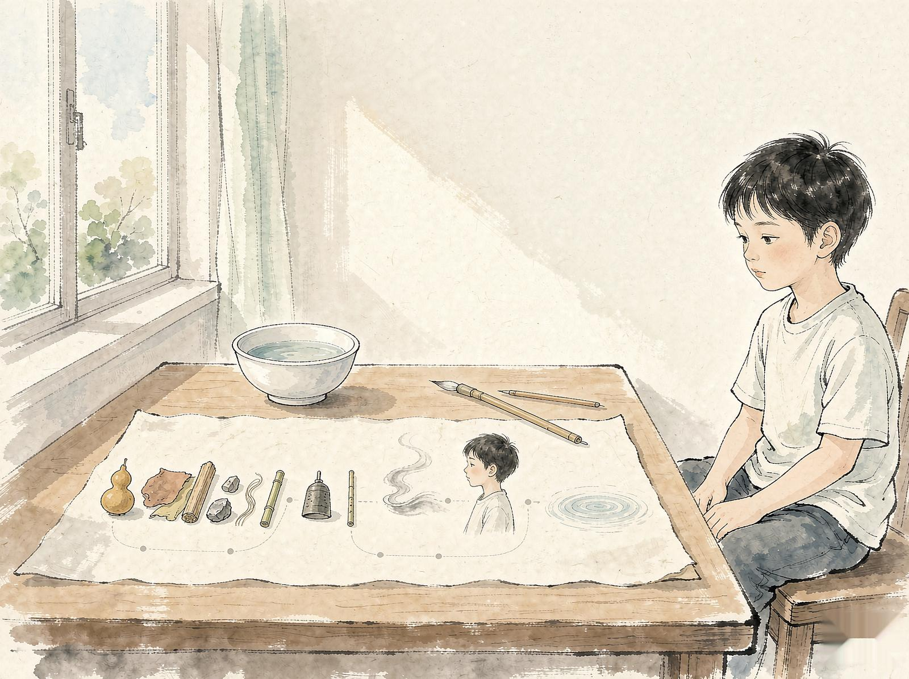

匏土革，木石金。丝与竹，乃八音
对比「爱恶欲，七情具」：上句向内，勘破七情与爱取分别；此联向外，开出声尘一路，立礼乐调心法门。内有情识起伏，外有声响振动；声可感心，亦可敛情，声与情互为因缘，正好接上音声法门、颂钵持咒那一支义理。
勘破俗见：常人只当这是一份古代乐器清单。要义不在器物，而在声由缘生——器本身无声，待气、待敲击吹弹、待耳根相合，声响方才现起。声无自性，是名音声；佛说音声，即非音声，是名音声。八音是调摄七情的方便，不是追逐声色的享乐。
前面我们学到，人心里有喜、怒、哀、惧、爱、恶、欲七种情绪。
经文接着告诉我们古人做乐器的八种材料：匏、土、革、木、石、金，再补上丝、竹，合起来叫做八音。
葫芦做笙，泥土烧埙，兽皮蒙鼓，木头做柷敔，石头磨成磬，金属铸成钟；丝线做成琴弦，竹子做成箫笛。

不同材料，振动出来的声音各不相同。安宁庄重的乐声，可以安抚纷乱的心情。

声音依托器物、气息而生，没有独立不变的声音。好听的音乐可以用来静心，但不要贪恋、沉迷声响。
落到心上理解：八音是人籁，和七情一样，都是因缘波动。本心如虚空，声音在虚空中生起、消散。
音声法门是以声为筏，借听觉这个外缘，觉察起伏的情念，让爱恶的攀附慢慢止息。
如同颂钵、持咒，要紧的不是声音好不好听，而是闻声之时，不随声尘生贪、生厌，回到观照。
执着好听的声响，随音声升起贪爱，被声尘牵着走；或以为器物自带声音，声是独立实存之物。
知音声缘起如幻，用乐声作方便，调伏纷乱七情；离气、离敲击、离耳根便无声响，故不住声相。
- 匏、土、革、木、石、金、丝、竹，合称八音，是上古乐器的分类。
- 不同材质振动，生出不同音色，乐可以调和情绪。
- 声音是因缘和合的显现，没有固定不变的自性。
- 音声是调心的工具，不是用来纵情享乐的。
一、勘俗见。文脉极有深意：七情之后紧接八音。古人礼乐的底层逻辑是——人心有情易乱，故以乐和之。这是华夏原生的声调心性体系，与音声疗愈、持诵法门相通。
二、现代对照。和孩子体会安静的音乐、嘈杂的声音对心情的不同影响；分清欣赏音乐，和沉溺感官快感。
三、承接常变主线。乐器形制、演奏方式持续变化（可变之相），气动发声、声可感心的规律不变（常）。
四、承接教与学二分。家长示范如何平和聆听，不被好听的声音牵绊，属施教一侧；孩子慢慢练习闻声不起贪厌，是自主修习。
接上选择力练习：声是外缘，筏非彼岸；闻声知幻，不住声尘。
匏土革，木石金。丝与竹，乃八音
一 · 字义与句读八音，八类发声材质所制之乐。丝，蚕丝为弦，琴瑟之属；竹，竹管，箫笛之类。乃，是也，总括前六，合丝竹而成八音。
名目见《周礼·春官·大师》「皆播之以八音：金、石、土、革、丝、木、匏、竹」，郑玄注各器；经文改序为「匏土革、木石金、丝与竹」，取其协韵。
全句释义：取匏、土、革、木、石、金、丝、竹八种材质，造器成乐，气动则发声，名为八音。经文自内七情，转出外声之修，开出耳根观照、礼乐摄心的路径。
二 · 命题考辨（一）七情与八音成对。上章向内：根尘相触，生七情爱取，属受、想二蕴。此章向外：耳根对声尘，八音是人所造的声尘。情扰于内，声动于外；声既能引情，亦能敛情。礼乐教化不是艺术审美，是一套心性训练——以乐节情，以声止妄。
（二）对照当下现代语境。颂钵、音声疗愈、声波冥想，底层都是振动影响神经与情绪。般若在这里校准：不要形成新的法执，不要以为某种声音自带「加持、治愈」的实体力量。声音只是外缘，能调心的是闻声之时那份觉察与安住；好听的声音是助缘，不是本心。
（三）般若范式互参。音声属六尘之声尘，色法所摄。联动三才五蕴太极空杯模型：虚空自性为本，材质、弹击、气息、耳根为外缘，音声是缘起显现；声起则有，声歇则无，来去无迹，不污染虚空本体。
（四）延伸义理。《金刚经》偈「一切有为法，如梦幻泡影，如露亦如电，应作如是观」；音声正属有为法，持咒、梵呗皆是在声尘上修止观。闻声入观，可参《楞严经》观音耳根圆通「初于闻中，入流亡所」：不循声去，返闻自性。《道德经》「五音令人耳聋」，不是否定音乐，是警示耽着声尘、迷失本心。《庄子·齐物论》天籁、地籁、人籁：八音属人籁，比竹而成，待气待击而后鸣，与天地一气相通。
呼应「本乎数」：八对应八方、八风（《左传·隐公五年》「节八音而行八风」），是取象方便，不是世间声响只有八类，以此总摄人籁之器。
三 · 跨典互参《道德经》「五音令人耳聋」（第十二章）——戒耽声之执，不弃声之用。
《庄子·齐物论》「人籁则比竹是已」——八音即人籁，待风待击而后鸣；天籁不在无声，在「吹万不同，而使其自己也」。
串联前文：从天地万物、六谷六畜，转入七情内观；再由内外开，出声尘礼乐一支，拓展耳根圆通的修持路径。
四 · 与前后课的张力呼应「人不学，不知义」：义即是明声尘缘起，知乐为调情之筏，不为声色所缚。
呼应「玉不琢，不成器」：打磨自心，就在每一次闻声之际，练习不起贪爱、不生排斥。
呼应「教之道，贵以专」：见闻之学由心性七情转入耳根声尘，立礼乐音声修持一脉。
次第链条继续延伸：…… → 前两课 → 本课
一、天籁、地籁、人籁之分，落在气动，还是在分别心？《齐物论》天籁非无声，是「吹万不同，而使其自己也」。
二、长期依靠音声静心，会不会形成习气依赖，离开声音便难以安住？
三、耳根圆通与这套八音礼乐，如何更深互参、打通？